▴12.1首例新型冠状病毒肺炎确诊患者发病，这比官方通报的最早发病日期提前了7天。
▴12.8武汉卫健委1月5日发布的第三份官方通报中，提及患者最早发病时间为2019年12月12日。1月11日官方通报中将最早发病日期更新为2019年12月8日。
▴12.30晚间起，两份落款为武汉市卫健委的紧急通知在网络流传。文件透露，武汉市华南海鲜市场陆续出现不明原因肺炎病人。李文亮医生在微信群发出提醒。
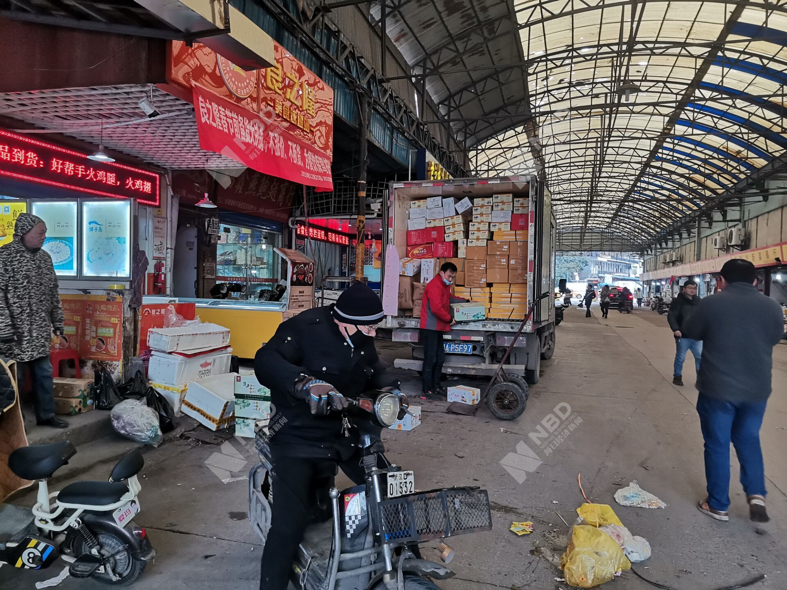▴1.1新京报记者探访华南海鲜市场发现，1月1日起，华南海鲜市场已经休市整治。
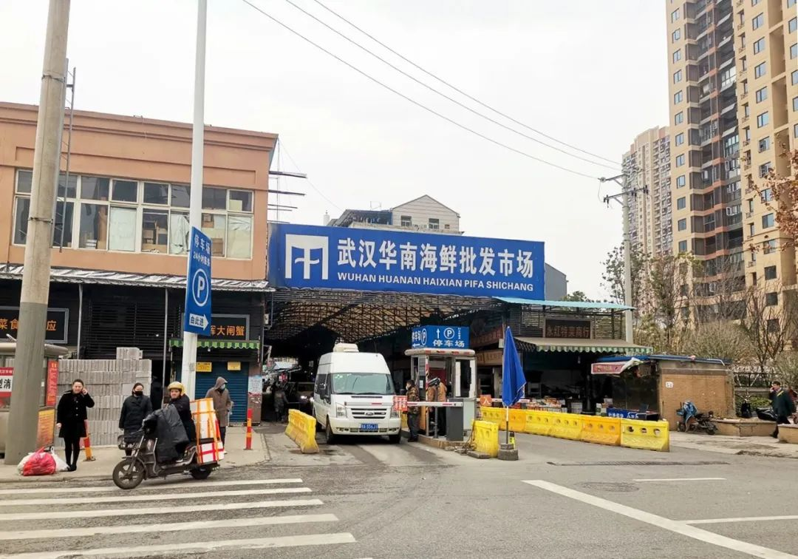▴1.9据央视新闻客户端消息 就武汉不明原因的病毒性肺炎疫情病原学鉴定进展问题，1月9日，记者从病原检测结果初步评估专家组了解到，截至2020年1月7日21时，实验室检出一种新型冠状病毒，获得该病毒的全基因组序列，经核酸检测方法共检出新型冠状病毒阳性结果15例，从1例阳性病人样本中分离出该病毒，电镜下呈现典型的冠状病毒形态。专家组认为，本次不明原因的病毒性肺炎病例的病原体初步判定为新型冠状病毒。
▴1.20武汉市成立市新型冠状病毒感染的肺炎疫情防控指挥部，统一领导、指挥全市疫情防控工作。
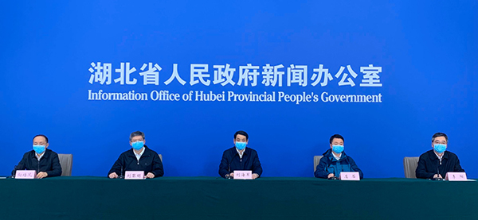▴1.21世界卫生组织派出专家组赴武汉市实地考察。WHO称武汉肺炎可能持续“人传人”。
▴1.24下午，武汉市城建局紧急召集中建三局等单位举行专题会议，要求参照2003年抗击非典期间北京小汤山医院模式，在武汉职工疗养院建设一座专门医院——武汉蔡甸火神山医院，集中收治新型冠状病毒肺炎患者。医院建筑面积2.5万平方米，可容纳1000张床位，由中建三局牵头，武汉建工、武汉市政、汉阳市政等3家企业参与。除夕夜，经中央军委批准，军队从陆军、海军、空军三所军医大学各抽调150人，组建支援湖北地区应对新型冠状病毒感染的肺炎疫情医疗队，已于1月24日夜抵达武汉。
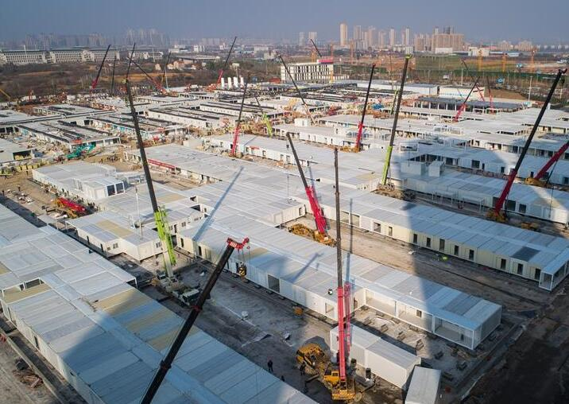 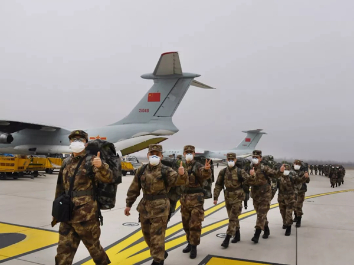▴1.25下午3点半，武汉市防疫指挥部举行调度会，决定在武汉蔡甸火神山医院之外，半个月之内再建一所“小汤山医院”——武汉雷神山医院，新增床位1300张。同日，武汉市红十字会发布急需医疗物资名单及境外捐赠说明。
▴2.1湖北延长2020年春节假期,湖北各级公安政工部门全面启动战时奖励机制,同日李文亮确诊患新冠肺炎
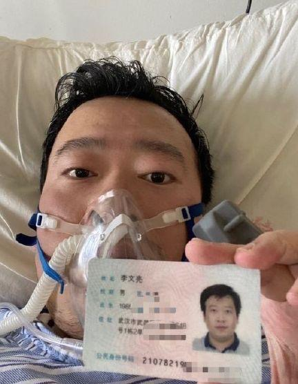▴2.3全国累计确诊病例超过20000人,同日陕西医生张建华殉职，50岁，湖南医生宋英杰殉职，27岁
▴2.4首批患者转运火神山医院，同日河南医生姚留记殉职，68岁
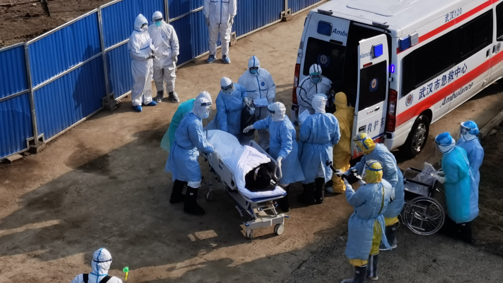▴2.7教育部称未经学校批准不准返校，同日医生李文亮殉职，南京医生徐辉殉职，51岁
▴2.9全国累计确诊病例超过40000人，同日湖北黄冈医生张军浩殉职，57岁呼和浩特卫健委主任被免职
▴2.10上海市发布《关于进-步加快智慧城市建设的若干意见》，武汉副市长等3人被约谈，武汉医生林正斌殉职，63岁，河南医生王士成殉职，37岁，湖北襄阳医生魏安君殉职，67岁
▴2.11世卫将新冠肺炎命名为"COVID-19"
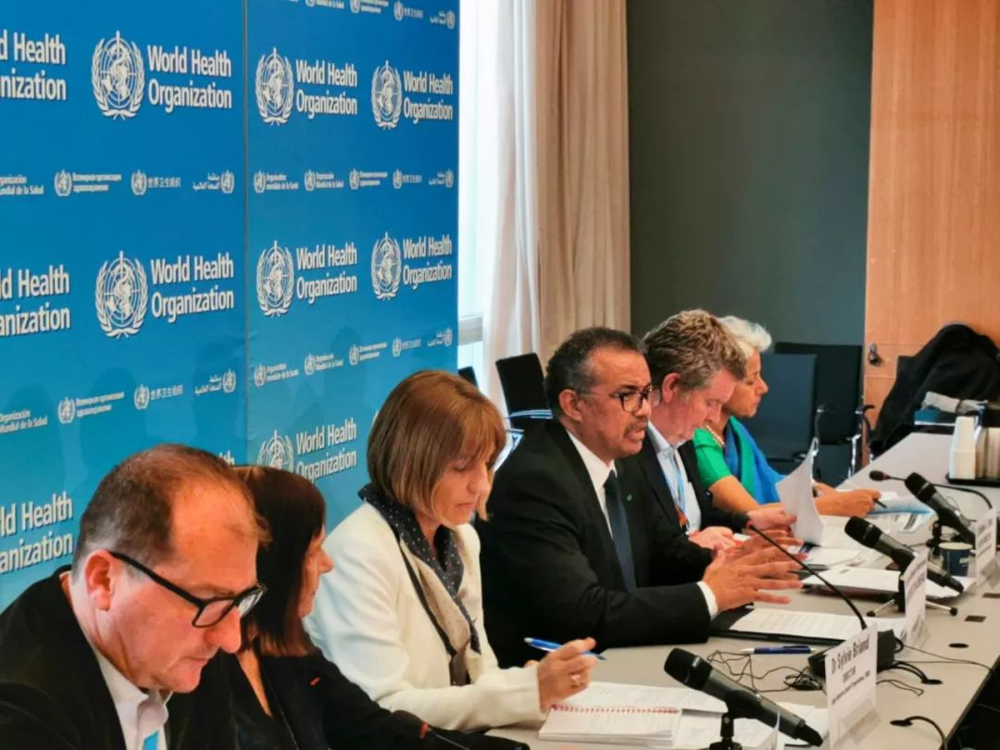▴2.12全国累计确诊病例超过50000人，同日云南医生陈健殉职，26岁西藏唯一确诊 病例治愈出院
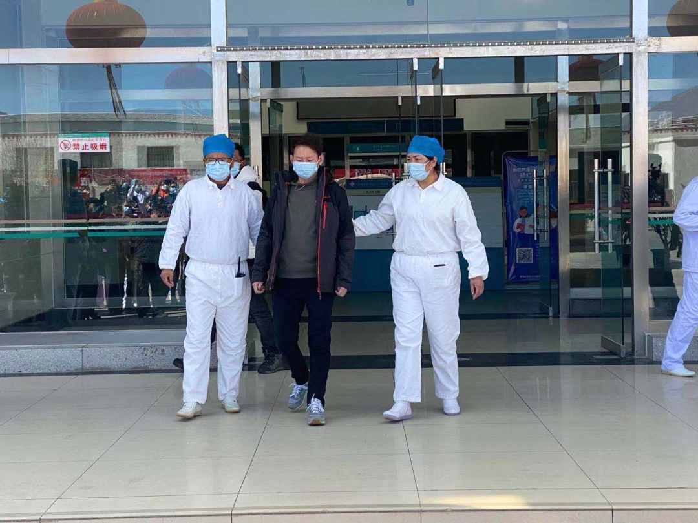▴2.13应勇任湖北省委书记，王忠林任武汉市委书记，同日湖北鄂州医生许德甫殉职，59岁，湖北仙桃医生刘文雄殉职，50岁
▴2.14张家界疾控中心科长到泰国躲疫情被撤职调查，武汉护士柳帆殉职，59岁，河北首例确诊患者治愈出院
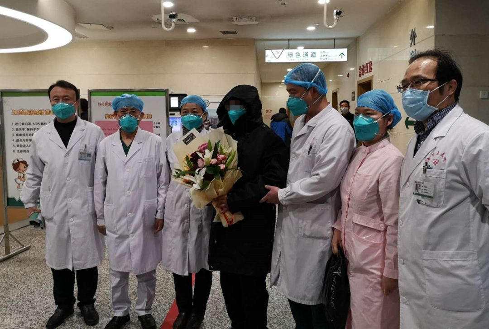▴2.15国家市场监管总局推出支持复工复产十条措施，同日湖北随州医生左汉文殉职，46岁
▴2.18国家卫健委称湖北以外地区新增病例14连降，同日武汉医生刘智明医生，51岁，湖北一线医务子女2020中考加10分录取
▴2.28山东监狱管理局副局长被免职
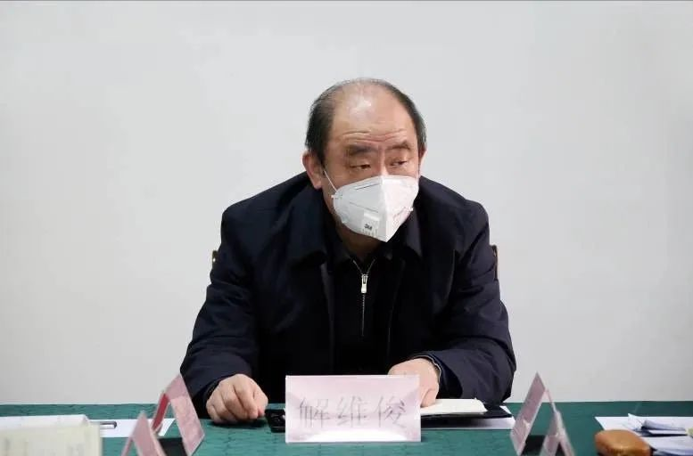▴3.1武汉产生首家“休舱’方舱医院，国家卫健委称武汉疫情快速上升态势得到控制
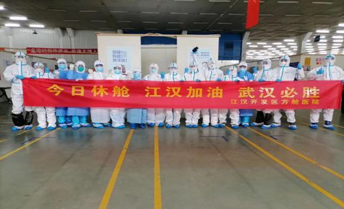